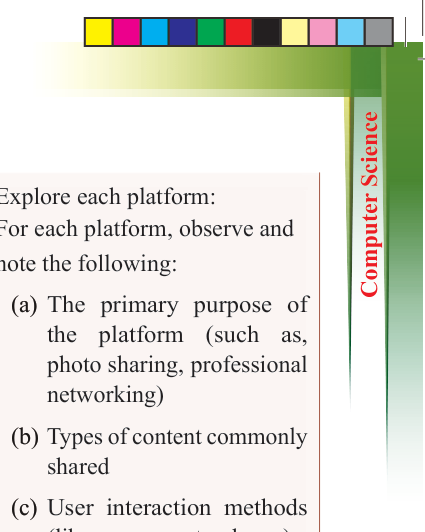
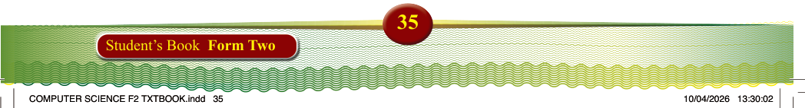

Social media
Social media have changed the way
people connect, share information, and
interact with each other. These platforms
let users send messages, share pictures
and videos, and even talk through voice
messages or live video streaming.
They make it easy to share ideas and
information with others quickly. People
access social media through apps and websites on devices like computers,
smartphones, and tablets. Social media
also allows users to create their content and have personal profiles.

Activity 1.19:
Exploring social media platforms
Aim: To familiarize students with different social media platforms and understand their unique features,
purposes, and user interactions.
Materials: Computer, tablet, or
smartphone with Internet access
Instructions:
1. Access social media platforms:
Using your device, visit the
following social media platforms:
Instagram, Facebook, WhatsApp,
LinkedIn, YouTube, TikTok, and
X (formerly Twitter)
2. Explore each platform:
For each platform, observe and note the following:
(a) The primary purpose of
the platform (such as,
photo sharing, professional networking)
(b) Types of content commonly shared
(c) User interaction methods
(likes, comments, shares)
(d) Target audience or user demographics
3. Compare and contrast:
Create a comparison chart or table that highlights the similarities and differences among these platforms based on your observations.
Deliverables:
A short paragraph showing a summary
of your findings that reflect on how
each platform serves its users. In your summary, consider the following:
(a) Which platform did you find most engaging and why?
(b) How the design and features
of each platform cater to its
intended audience?
(c) Any insights on how social
media
platforms
influence
communication and information
sharing?